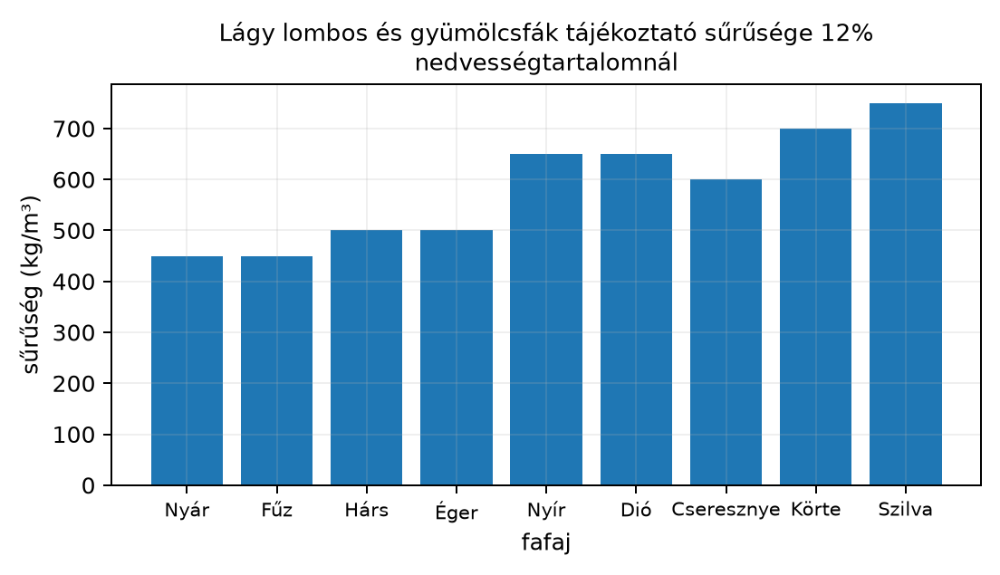

A műhelyben gyakran nem az a kérdés, hogy „milyen fát kapok”, hanem hogy „melyik fafaj a legjobb erre a feladatra”. Egy festett konyhaszekrény belső fiókoldalához felesleges drága diót venni, de egy faragott ajtódíszhez a kemény bükk is rossz választás lehet. A lágy lombos fák és a gyümölcsfák éppen azért fontosak, mert olcsóbb, könnyebb, jól megmunkálható vagy éppen nagyon dekoratív anyagot adnak – feltéve, hogy a helyükre kerülnek.
A lenti oszlopdiagram a most tárgyalt fafajok tájékoztató sűrűségét hasonlítja össze. A sűrűség segít megbecsülni, mennyire kemény, nehéz vagy tartós az anyag, de önmagában nem azonosítja a fafajt.

Az ábrán látható, hogy a nyár, a fűz és a hárs könnyű, a nyír és a dió közepes, a körte és a szilva pedig már sűrűbb, keményebb anyag. A számértékeket mindig tájékoztató adatként kezeld, mert ugyanazon fafaj sűrűsége is változhat a termőhelytől és a fatörzsön belüli helytől függően.
Definíció. Lágy lombos fafajoknak a gyakorlati faiparban azokat a lombos fákat nevezzük, amelyek sűrűsége általában kisebb, szövetük egyenletesebb, pórusaik többnyire szórt likacsúak, és megmunkálásuk kisebb erőt igényel. A csoportba tartozik például a nyár, a fűz, a hárs, az éger és – a hazai gyakorlatban gyakran – a nyír is, bár a nyír sűrűsége már a keményebb lombosok alsó tartományát közelíti (a kemény lombosoknál használt kb. 600 kg/m³-es határ körül van, ezért a besorolás megállapodás kérdése – lásd Hazai kemény lombos fafajok).
Megjegyzés. A „lágy” szó nem azt jelenti, hogy az anyag mindig puhán nyomható. Az éger vagy a nyír keményebb lehet annál, mint amit a hétköznapi „puha fa” kifejezés alapján várnánk. A csoportosítás a pórusok elrendezését és a megmunkálhatóságot is figyelembe veszi.
Definíció. Gyümölcsfáknak azokat a fafajokat nevezzük, amelyek termesztett vagy vad gyümölcsfák törzséből származnak. Jellemzőjük a finom, zárt szövet, a kellemes rajzolat és gyakran a meleg vörösesbarna szín. Ide tartozik a dió, a cseresznye, a körte és a szilva, A dió elsősorban gyümölcséért termesztett fa, de faanyaga a legértékesebb hazai bútorfák közé tartozik, ezért soroljuk ide.
A fafaj felismeréséhez itt is a Fafajfelismerés: elsődleges és másodlagos meghatározók alfejezetben tanultakat használd: nézd a színt, a pórusok méretét és elrendezését, a bélsugarakat, az évgyűrűhatárt, a szagot és a sűrűséget. A lágy lombosokon a növekedési gyűrűk sokszor kevésbé feltűnőek, a pórusok aprók, a felület egyenletes.
A nyár (Populus fajok) fája világos, fehéres-sárgás, esetenként enyhén szürkés vagy zöldes árnyalatú. A szövete egyenletes, de gyakran széles évgyűrűjű. A nyár könnyű, puha, jól fűrészelhető, gyalulható és ragasztható. Hátránya, hogy felülete könnyen nyomódik, karcolódik, és nem időjárásálló. Felhasználása: belső bútorváz, fiókoldal, hátlap, festett bútoralkatrész, csomagolóláda, raklap, furnér és rétegelt lemez alapanyag. A nemesnyár ültetvényes termesztése gyors növekedést és egyenletes, csomómentes furnérrönköt adhat.
A fűz (Salix fajok) szintén könnyű, puha, fehéres vagy halványbarnás fa. A szövete durvább, szívósabb, de a nyárhoz hasonlóan rossz a tartóssága. Felhasználása: csomagolóanyag, vakkeret, furnér, rétegelt lemez, esetenként faragott dísztárgy. Nem való kültéri szerkezetbe, és teherviselő bútorelemnek sem alkalmas.
Szabály. Nyár és fűz esetében a látható, igénybe vett felület helyett elsősorban belső, rejtett vagy rövid élettartamú alkatrészt készíts. A látható bútorfelületet furnérral, festéssel vagy más fafajjal oldd meg.
A hárs (Tilia fajok) világos, fehéres-krémszínű, enyhén sárgás anyag. Pórusai nagyon aprók, szövete egyenletes, bélsugarai a sugármetszeten finoman csilloghatnak. A hárs puha, könnyű, mégis jól vág, nem reped könnyen, és éles késsel tiszta felületet ad. Ezért a faragás és az esztergálás kedvelt anyaga.
Felhasználása: faragott díszek, esztergált alkatrészek, modellek, játékok, redőnylécek, festett bútorok. A hárs nem teherviselő szerkezeti fa; széklábnak, asztallapnak vagy lépcsőfoknak ne válaszd.
Megjegyzés. A hárs jól pácolható, de mivel pórusai finomak, a pácból kevesebbet szív fel. A hárs finom szövetű, de a pácot foltosan veheti fel; pácolás előtt készíts próbadarabot, szükség esetén előpácot vagy alapozót használj.
Az éger (Alnus glutinosa) frissen vágva narancsos-vöröses, levegőn barnás tónusúvá válik. Szövete finom és egyenletes, sűrűsége a nyárénál nagyobb, de még könnyű-közepes. Jól fűrészelhető, gyalulható, esztergálható és pácolható. Felhasználása: bútorváz, fiókoldal, rétegelt lemez, furnér, esztergált alkatrész, konyhai fatárgy. A pácolt égerrel gyakran utánozzák a sötétebb diófát.
A nyír (Betula pendula) fehéres-sárgás, enyhén vörösesbarna, finom rajzolatú fa. Bár sűrűsége már a keményebb tartományba esik, szórt likacsú, egyenletes szövete miatt a gyakorlatban a lágy lombosokkal együtt tárgyalják. A nyír szilárd, rugalmas, jól esztergálható és gőzölve jól hajlítható. Felhasználása: rétegelt lemez, bútoralkatrész, székkáva, fogantyú, játék, konyhai eszköz. Hátránya, hogy frissen érzékeny a gombásodásra, ezért szárítását és tárolását ellenőrizni kell.
A dió (Juglans regia) az egyik legkedveltebb hazai dekoratív bútorfa. Gesztje szürkésbarnából sötét csokoládébarnába megy, gyakran sötét erezettel. A szíjács világosabb, ezért furnérnál és tömörfa lapoknál a szíjácsot általában kiválogatják. A dió közepesen kemény, jól gyalulható, marható, esztergálható, és szépen lakkozható. Felhasználása: bútor, furnér, intarzia, esztergált dísz, fegyveragy, kis dísztárgy.
A cseresznye (Prunus avium) fája vörösesbarna, finom pórusú, meleg fényű. Idővel és fény hatására sötétedik. Jól megmunkálható, csiszolható, lakkozható. Felhasználása: bútor, furnér, esztergált alkatrész, kisebb dísztárgy. A cseresznye természetes színe önmagában is dekoratív, ezért ritkán pácolják erősen.
A körte (Pyrus fajok) halvány rózsaszínes-barnás, nagyon finom, egyenletes szövetű fa. Gőzölés után vörösesbarnára sötétedik. Jól faragható, esztergálható, és sűrű szövete miatt finom részletek kialakítására alkalmas. Felhasználása: finom bútorrész, rajzeszköz, fogantyú, intarzia, kisebb esztergált tárgy.
A szilva (Prunus domestica) vöröses-lilás-barnás, kemény, sűrű, finom pórusú fa. Törzse gyakran kicsi, csavarodott, repedésre hajlamos. Emiatt inkább kisebb alkatrészekre használjuk. Felhasználása: esztergálás, intarzia, dísztárgy, székorsó. Nagyobb tömörfa lap ritkán készül belőle.
A lágy lombos fáknál a leggyakoribb megmunkálási hiba a bolyhosodás. Ilyenkor a rostok nem tisztán vágódnak el, hanem felpuhulnak, felállnak a felületen. A nyár, a fűz és a hárs különösen hajlamos erre, főleg akkor, ha a kés tompa, a fordulatszám túl alacsony, vagy az előtolás túl gyors. A bolyhos felületet csak többszöri finom csiszolással lehet javítani.
Szabály. Lágy lombos fát éles szerszámmal, megfelelő forgácsolási sebességgel munkálj meg. A csiszolást fokozatosan finomítsd, és a felületkezelés előtt végezz próbacsiszolást. Ha a felület nedvesítés után újra bolyhosodik, a nedvesítéses szálfelhúzás után finoman csiszold újra.
A pácolhatóság a gyümölcsfáknál és a finom pórusú lágy lombosoknál általában jó, de a szórt likacsú, puha anyagok – például a nyár – hajlamosak a foltos pácszívásra. A pácot csak próbadarabon ellenőrizd. A dió és a cseresznye természetes színe gyakran szebb, mint a mesterséges pácolt szín, ezért ilyenkor inkább színtelen vagy enyhén színező lakkal, olajjal dolgozz.
Az alábbi táblázat a korábbi Hazai kemény lombos fafajok alfejezetben tanult fafajokat is beemeli, hogy együtt lásd a hazai választékot. A sűrűségértékek tájékoztató tartományok (ellenőrizendő: szakkönyvi táblázat), 12 %-os nedvességtartalomra vonatkoztatva; a többi alfejezet (pl. A fa fizikai tulajdonságai: sűrűség, megjelenés, hő és hang) ezzel egyező tartományokat használ.
| Fafaj | Sűrűség, ρ₁₂ (kg/m³, tájékoztató) | Szín, rajzolat | Megmunkálhatóság, pácolhatóság | Jellemző felhasználás |
|---|---|---|---|---|
| Tölgy | 650–760 | világosbarna, csersavas | jól megmunkálható, pácolva sötétíthető | bútor, lépcső, ablak, parketta |
| Bükk | 680–720 | halvány vörösesbarna | kemény, jól hajlítható | bútor, hajlított alkatrész, szerszámnyél |
| Kőris | 650–750 | sárgásfehér, erős rajzolat | rugalmas, jól gyalulható | sporteszköz, szerszámnyél, bútor |
| Akác | 700–900 | zöldes-sárgásbarna | kemény, szívós, nehezen pácolódik | kültéri szerkezet, oszlop, korlát |
| Gyertyán | 750–850 | fehéres, sűrű | nagyon kemény, nehezen dolgozható | gyalupad-alkatrész, ütőfa, fogantyú |
| Nyár | 400–500 | fehéres-sárgás | puha, bolyhosodhat, foltosan pácolódhat | csomagolás, bútorváz, rétegelt lemez |
| Fűz | 400–500 | fehéres, halványbarna | puha, szívós, tartóssága gyenge | csomagolás, vakkeret, furnér |
| Hárs | 400–550 | fehéres-krém | nagyon jól faragható, esztergálható | faragás, esztergálás, modell, játék |
| Éger | 450–550 | vörösesbarna | jól megmunkálható, jól pácolható | bútorváz, rétegelt lemez, esztergálás |
| Nyír | 600–700 | sárgásfehér | kemény, jól esztergálható, gőzölve hajlítható | rétegelt lemez, bútor, fogantyú |
| Dió | 600–700 | sötétbarna | jól marható, gyalulható, gyönyörűen lakkozható | bútor, furnér, intarzia |
| Cseresznye | 550–650 | vörösesbarna | finom, jól csiszolható | bútor, furnér, esztergált alkatrész |
| Körte | 650–750 | vörösesbarna | finom, kemény, jól faragható | finom bútorrész, rajzeszköz, intarzia |
| Szilva | 700–800 | lilás-vörösesbarna | kemény, kis méretben használható | esztergálás, intarzia, dísztárgy |
Továbbvitt eredmény. Ez az összefoglaló táblázat a hazai fafajok választási alapja. Használni fogjuk a Trópusi fafajok, helyettesítés és legális, tanúsított faanyag alfejezetben, amikor arról döntünk, milyen hazai fafajjal helyettesíthető egy trópusi anyag, és a Furnérok: gyártás, fajták és felhasználás alfejezetben, amikor furnérfajtákat választunk egy adott bútorfelületre.
Egy asztalos tálalószekrényt készített. A látható ajtóbetétekhez dió furnért rendelt, mert a megrendelő sötét, elegáns felületet kért. A belső fiókoldalakat nyárfából készítette, mert azok rejtettek, és a könnyű anyag csökkenti a bútor tömegét. A faragott rozettákat hársfából faragta, mert a hárs éles vésővel tiszta felületet ad, és nem reped a finom részleteknél. A hátlapot nyír rétegelt lemezből választotta, mert a rétegelt lemez stabil, és a nyír furnér jól terhelhető. A festett lábazati elemhez nyár fűrészárut használt, mert a festék eltakarja a fa rajzolatát, és nem lett volna gazdaságos tömör diót beépíteni. Ez a példa mutatja, hogy a fafajválasztás nem „egyetlen jó fafaj” keresése, hanem a láthatóság, a terhelés, a megmunkálás és az ár együttes mérlegelése.
Faanyag átvételekor a lágy lombos és gyümölcsfa választékot is ugyanúgy ellenőrizd, mint a kemény lombosokat: fajazonosság, nedvességtartalom, alaki hibák, repedések, kékülés, rovarkárosítás. A fafajt a szín, a póruskép, a bélsugarak és a sűrűség együttesen azonosítják.
Példa. Egy nyárfának gondolt darab mérete 1 000 mm × 100 mm × 20 mm, tömege 0,9 kg. A térfogata:
A sűrűsége:
Ez a nyárra jellemző tartományba esik, tehát a sűrűség megerősíti a fajmeghatározást. A mérést mindig csak tájékoztató ellenőrzésnek tekintsd, mert a nedvességtartalom jelentősen befolyásolja a tömeget.
Hiba. Látható, pácolt bútorfelületre nyár fűrészárut választanak, és a pác foltos lesz. Ok: a nyár széles, puha évgyűrűi eltérően szívják a pácot. Helyes gyakorlat: furnérozott lap, festett felület vagy egyenletesebb, finomabb fafaj használata.
Hiba. Drága dió tömör fából készítenek rejtett belső vázat. Ok: a fafajt nem a feladat terhelése, hanem megszokás alapján választják. Helyes gyakorlat: rejtett vázhoz nyár, éger vagy nyír; diót csak látható, dekoratív felületre.
Hiba. Hársfából készítenek nagy terhelésű széklábat. Ok: a hárs puha, nyomódik, és a csapozás is gyorsan meglazul. Helyes gyakorlat: teherviselő alkatrészhez bükk, kőris vagy akác; hársot faragott díszre és könnyű munkadarabra.
Hiba. Nyír fűrészárut rosszul tárolnak, ezért a felülete elszíneződik, gombásodik. Ok: a nyír frissen érzékeny a nedvességre és a gombásodásra. Helyes gyakorlat: ellenőrzött nedvességtartalom, szellős tárolás és gyors felhasználás.
1. feladat (A). Sorolj fel legalább három lágy lombos fafajt, és írd melléjük egy-egy jellemző felhasználásukat.
2. feladat (A). Melyik fafajokat használjuk gyakran rétegelt lemez készítésére? Indokold röviden.
3. feladat (B). Készíts döntési táblázatot a következő alkatrészekhez: látható ajtóbetét, rejtett fiókoldal, faragott rozetta, egyszer használatos csomagolóláda. Mindegyikhez válassz fafajt, és egy mondattal indokold.
4. feladat (B). Egy 1 000 mm hosszú, 120 mm széles, 22 mm vastag nyárfa darab tömege 1,19 kg. Számítsd ki a sűrűségét kg/m³-ben. A kapott érték a nyár jellemző tartományába esik-e?
5. feladat (C). Egy festett nyár ajtóbetét felületén foltok jelennek meg a festés után. Mi lehet az ok, és hogyan lehetett volna elkerülni?
6. feladat (D). Egy megrendelő esztergált gyertyatartót és egy konyhai vágódeszkát kér. Melyik hazai fafajt választanád a gyertyatartóhoz, és melyiket a vágódeszkához? Indokold a választást a megmunkálhatóság és a használat szempontjából.
Önellenőrzés – válaszok
1. feladat megoldása. Nyár – bútorváz, csomagolás; fűz – vakkeret, csomagolóanyag; hárs – faragás, esztergálás.
2. feladat megoldása. Gyakori rétegelt lemez alapanyag a nyár, a nyír és az éger. A nyár könnyű és olcsó, a nyír szilárdabb, az éger finom szövetű, ezért a rétegfelépítéshez jól használhatók.
3. feladat megoldása. Látható ajtóbetéthez dió- vagy cseresznyefurnér, mert dekoratív; rejtett fiókoldalhoz nyár, mert könnyű és olcsó; faragott rozettához hárs, mert jól faragható; csomagolóládához nyár vagy fűz, mert olcsó és könnyű.
4. feladat megoldása.
Adott:
,
,
,
.
A kapott érték a nyár jellemző, 400–500 kg/m³ tájékoztató tartományába esik.
5. feladat megoldása. A foltos festés oka általában az egyenetlen szívóképesség: a nyár puha, széles évgyűrűs részei több anyagot szívnak fel, mint a keményebb részek. Elkerülhető alapos csiszolással, pórustömítő alapozóval, vagy eleve festésre alkalmas, egyenletesebb anyag, illetve furnérozott lap választásával.
6. feladat megoldása. A gyertyatartóhoz hársat vagy cseresznyét érdemes választani: a hárs jól esztergálható, a cseresznye dekoratívabb és keményebb. A vágódeszkához szilva, körte vagy a Hazai kemény lombos fafajok közül például bükk, juhar vagy gyertyán való: kemény, szórt likacsú, finom pórusú, jól tisztítható. A gyűrűs likacsú kőris és tölgy nagy pórusai miatt kevésbé ajánlott. A felületet csak élelmiszer-érintkezésre alkalmas olajjal kezeld (ellenőrizendő: termék megfelelőségi nyilatkozata, 1935/2004/EK), lakkot, pácot ne használj; ragasztott deszkánál vízálló (D3–D4) ragasztó kell.
A lágy lombos fafajok közé a gyakorlatban a nyár, a fűz, a hárs, az éger és gyakran a nyír tartozik. Közös vonásuk a viszonylag egyenletes, apró pórusú szövet és a jó megmunkálhatóság. A nyár és a fűz könnyű, puha, elsősorban rejtett vázra, csomagolásra és rétegelt lemez alapanyagnak való. A hárs a faragók és esztergályosok kedvelt anyaga. Az éger és a nyír bútorvázhoz, rétegelt lemezhez és esztergált alkatrészekhez használható. A dió, a cseresznye, a körte és a szilva dekoratív, finom szövetű gyümölcsfa, amelyből bútorfelület, furnér, esztergált dísz és intarzia készül. Megmunkálásuknál a puha fák bolyhosodására és foltos pácszívására figyelj; a gyümölcsfákat legtöbbször természetes színükben, színtelen lakkal vagy olajjal kezeljük. A hazai fafajok összefoglaló táblázata választási alapként szolgál a trópusi fafajok helyettesítéséhez és a furnérválasztáshoz.
A fafajok leírása a hazai faanyagismereti gyakorlatra és általános faipari szakkönyvekre épül. A sűrűségtartományok és a felhasználási jellemzők tájékoztató értékek; a konkrét termőhely, a fafajtípus és a kereskedelemben kapott tétel nagyobb eltérést is mutathat. Ellenőrizendők a pontos sűrűség-, zsugorodás- és tartóssági adatok, a fafajok kereskedelmi megnevezésére vonatkozó európai szabvány (MSZ EN 13556, jelölve: ellenőrizendő), valamint a gyártói anyagleírások a furnér- és rétegelt lemez alapanyagoknál.